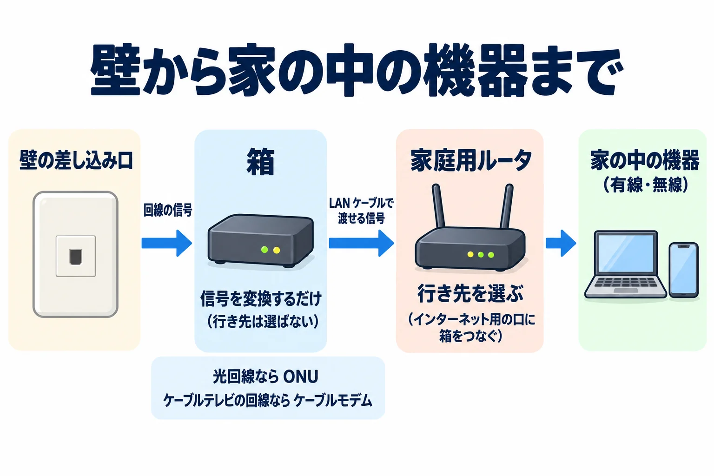
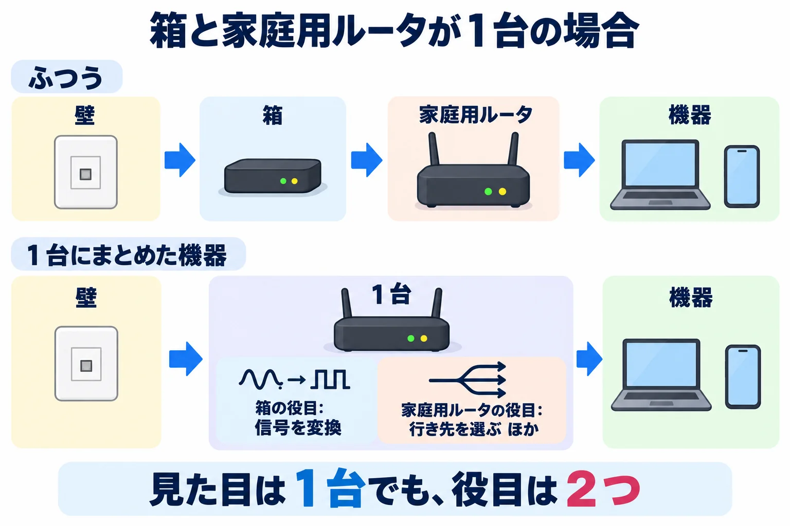

ネットワークのしくみ › 4-3
第 4 章 家庭とオフィスの LAN — Wi-Fi・家庭用ルータ・DHCP 4-3
壁から家庭用ルータまで — 回線の信号を変える箱
このページでわかること
壁まで来ている ISP の回線は、そのままでは家庭用ルータにつなげず、間に回線の信号を変換する箱が入る。箱は信号を変えるだけで、行き先を選ぶのは家庭用ルータである。このページでは、壁から家の中の機器までの並び順と、箱の呼び方が回線の種類で変わることを確認する。
このページの目次
かけあい
4-2 で、外へ出る口は家庭用ルータのインターネット用の口だと聞きましたけど、壁からそこへ直接ケーブルをつなげばいいんですか?
いいえ、間に信号を変換する箱が入ります。壁まで来ている ISP の回線の信号は、家庭用ルータの LAN ケーブルの口にそのまま差せる形ではないからです。LAN ケーブルは、家の中の有線の機器をつなぐのと同じケーブルのことです。
そのまま差せる形じゃないって、どういうことですか?
第 2 章 2-4 で見たとおり、銅線は信号を電気で、光ファイバは光で伝えます。家庭用ルータに差す LAN ケーブルは銅線で電気の信号を運ぶので、光ファイバで壁まで来た光の信号とは形が違います。ケーブルテレビの回線も、間に箱を挟んでつなぐ点は同じです。
その箱って、何て呼ぶんですか? 名前は 1 つなんですか?
回線の種類で名前が決まります。光回線なら ONU(光回線終端装置)、ケーブルテレビの回線ならケーブルモデムと呼ばれる箱です。
名前が違うだけで、やってることは同じなんですか?
はい、どちらも壁まで来た信号を、LAN ケーブルで渡せる信号に変える箱です。ただ、変換する元の信号が違うので、ONU とケーブルモデムは別々の機器になっています。
壁から家の中の機器までは、どんな順に並ぶんですか?
壁の差し込み口、箱、家庭用ルータのインターネット用の口、家の中の機器の順です。図にするとこうなります。

壁から家の中の機器まで
壁の差し込み口
| 回線の信号
v
+- 箱 -----------------------+
| 信号を変換するだけ |
| (行き先は選ばない) |
+----------------------------+
光回線なら ONU
ケーブルテレビの回線なら
ケーブルモデム
| LAN ケーブルで
| 渡せる信号
v
+- 家庭用ルータ -------------+
| 行き先を選ぶ |
| (インターネット用の口に |
| 箱をつなぐ) |
+----------------------------+
|
v
家の中の機器(有線・無線)
壁から家の中の機器まで、壁の差し込み口、箱、家庭用ルータの順に並ぶ。箱は信号を変えるだけで、行き先を選ぶのは家庭用ルータである。
箱が間に入ってるなら、行き先を選ぶ役目も、箱がしているんですか?
いいえ。行き先を選ぶのは家庭用ルータで、4-2 で見たルータとしての役目です。箱がするのは、信号を変換することだけです。
箱は信号を変えるだけで、行き先は家庭用ルータが選ぶ、ってことですね。
そのとおりです。4-2 で見た 5 つの役目に、信号を変換する役目は入っていません。それは壁の側の箱の役目だと、分けて覚えてください。
友達の家は箱が見当たらなくて、家庭用ルータだけに見えたんですけど。
箱の役目と家庭用ルータの役目を 1 台にまとめた機器もあります。光回線では、ONU と家庭用ルータの役目をまとめたものが、ホームゲートウェイと呼ばれます。見た目は 1 台でも、役目が 2 つあることは変わりません。

箱と家庭用ルータが 1 台の場合 ふつう 壁 -> 箱 -> 家庭用ルータ -> 機器 1 台にまとめた機器 壁 -> [ 1 台 ] -> 機器 +- 1 台の中 -----------------+ | 箱の役目: 信号を変換 | | 家庭用ルータの役目: | | 行き先を選ぶ ほか | +----------------------------+ 見た目は 1 台でも、役目は 2 つ
箱と家庭用ルータを 1 台にまとめた機器でも、信号を変換する役目と家庭用ルータの役目は別々にある。
ちなみに、その箱は自分で用意するものなんですか?
ONU は、多くの場合、光回線を契約した会社から提供されます。まずは自宅の壁のそばに、この箱があるか見てみてください。
壁、箱、家庭用ルータ、機器の順で、箱は信号を変えるだけ、行き先は家庭用ルータが選ぶ。1 台にまとまっていても役目は 2 つ、ですね。
そのとおりです。次のページでは、4-2 で出てきた DHCP が、家庭用ルータにつないだ機器へ番号を配るやり取りを見ていきましょう。
まとめ
- 壁まで来ている回線の信号は、家庭用ルータの LAN ケーブルの口にそのまま差せる形ではないので、間に信号を変換する箱が入る。
- 箱の名前は回線の種類で決まる。光回線なら ONU(光回線終端装置)、ケーブルテレビの回線ならケーブルモデムで、変換する元の信号が違うので別々の機器である。
- 並びは、壁の差し込み口、箱、家庭用ルータのインターネット用の口、家の中の機器の順。箱は信号を変換するだけで、行き先を選ぶのは家庭用ルータである。
- 箱と家庭用ルータの役目を 1 台にまとめた機器もあり、光回線ではホームゲートウェイと呼ばれる。見た目は 1 台でも、役目は 2 つある。
しくみの話
壁まで来ている回線の信号は、回線の種類によって形が違う。光回線では光ファイバで光の信号が来る。家庭用ルータに差す LAN ケーブルは銅線で、電気の信号を運ぶ(#43)。そのため、壁と家庭用ルータの間に、信号を変換する箱が入る。光回線の箱は ONU(光回線終端装置)で、光の信号と LAN ケーブルで渡せる信号を相互に変換する。ケーブルテレビの回線の箱はケーブルモデムで、ONU とは変換する信号が違う。並びは、壁の差し込み口、箱、家庭用ルータのインターネット用の口、家の中の機器の順になる。箱がするのは信号の変換だけで、宛先を見て次の転送先を選ぶのは家庭用ルータのルータの役目である。箱と家庭用ルータの役目を 1 台にまとめた機器もあり、光回線ではホームゲートウェイと呼ばれるが、その場合も役目は 2 つある。
| 回線の種類 | 箱の名前 | 箱の位置 |
|---|---|---|
| 光回線 | ONU(光回線終端装置) | 壁の差し込み口と家庭用ルータの間 |
| ケーブルテレビの回線 | ケーブルモデム | 壁の差し込み口と家庭用ルータの間 |
試してみよう
netstat -rn見方: 実行結果の「default」で始まる行の右側にあるアドレスが、外あての通信を最初に任せる相手で、このページで見た家庭用ルータのアドレスです。任せる相手は、壁の側の箱ではなく家庭用ルータです。
command not found などで動かなければ、読むだけで進んでよい。
参考文献
- [#43] Cisco Networking Academy「Networking Basics」 — 原典(演習 4.4.4「ワイヤレスルータとクライアントを設定する」、ケーブルモデムを家庭用ルータのインターネットポートに銅製のストレートケーブルで接続する場面)
- [#65] Juniper Networks「Day One: Routing the Internet Protocol」 — 原典(p.11、クライアントは IP アドレスと、サブネット上のルータにあたる出口のアドレスを割り当てられること)
クイズ
壁と家庭用ルータの間に入る箱(ONU やケーブルモデム)と、家庭用ルータの役目の違いとして正しいものはどれか。
ONU とケーブルモデムが別の名前で呼ばれるのは、なぜか。
箱と家庭用ルータの役目を 1 台にまとめた機器(光回線ではホームゲートウェイと呼ばれる)について、正しい説明はどれか。